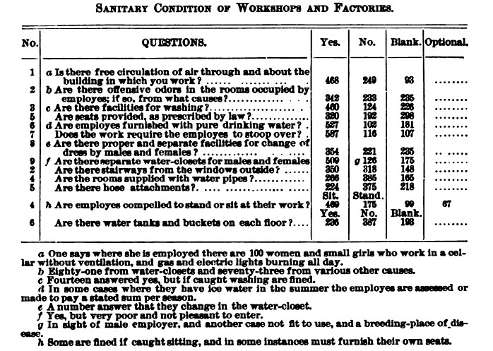

For this assignment we’ll be preparing an HTML view of data in an XML file from The Restoration of Nell Nelson project. We prepared the XML to curate the information from a chart originally printed in a nineteenth-century newspaper:  Our XML reorganizes the information using elements and attributes to hold the data for each survey question. We will write XSLT to present that information in a much simpler way that works better for reading on the web than in a newspaper.
The source XML file can be found here: WSGATableCh1.xml. You should right-click on this link, download the file, and open it in <oXygen/>. We may be using it for subsequent assignments, so keep a copy when you’re done with this exercise.
Our XML file is coded in the TEI namespace, which means that your XSLT stylesheet
must include an instruction at the top to specify that when it tries to match elements, it needs to
match them in that TEI namespace. When you create an new XSLT document in <oXygen/> it won’t contain that instruction by default, so whenever you are working with TEI you need to add it (See the text in blue below). To ensure that the output would be in the XHTML namespace, we
added a default namespace declaration (in purple
below). To output the required DOCTYPE declaration, we also created
<xsl:output> element as the first child of our root
<xsl:stylesheet> element (in green below), and we needed to include an attribute there to omit the default XML declaration because if we output it that XML line in our XHTML output, it will not produce valid HTML with the w3C and might produce quirky problems with rendering in various web browsers. So, our modified stylesheet template and xsl:output line is this, and you should copy this into your stylesheet:
<?xml version="1.0" encoding="UTF-8"?>
<xsl:stylesheet xmlns:xsl="http://www.w3.org/1999/XSL/Transform"
xmlns:xs="http://www.w3.org/2001/XMLSchema"
xpath-default-namespace="http://www.tei-c.org/ns/1.0"
xmlns:math="http://www.w3.org/2005/xpath-functions/math"
exclude-result-prefixes="xs math"
xmlns="http://www.w3.org/1999/xhtml"
version="3.0">
<xsl:output method="xhtml" encoding="utf-8" doctype-system="about:legacy-compat"
omit-xml-declaration="yes"/>
</xsl:stylesheet>
For this assignment you want to write an XSLT stylesheet that will transform the XML input document into an HTML document presents the information in HTML tables. In order to create an HTML table, you need to know that a table in HTML is a <table> element that contains one <tr> (table row
) element for each row of the table. Each cell in the row is a <td> (table data
) element for regular rows and a <th> (table header
) element for the header row. To view HTML table code, take a look at this w3schools example:
http://www.w3schools.com/html/html_tables.asp.
We are going to create a new HTML table to hold all the survey questions that share the same kinds of responses. One of these will be Yes
/No
types of answers, and the other two tables will hold the questions with different kinds of answers. We will make sure each table has clear header rows so we can see the kinds of survey questions being asked. This basically means we are remixing the information presented in the source documents for ease of reading. The desired HTML output will look like this:
| Number | Question | Yes | Yes, but fined | No | Blank | Total Responses |
|---|---|---|---|---|---|---|
| 1 | Is there free circulation of air through and about the building in which you work? | 468 | 249 | 93 | 810 | |
| 2 | Are there offensive odors in the rooms occupied by employes[?] | 342 | 233 | 235 | 810 | |
| 3 | Are there facilities for washing? | 460 | 14 | 124 | 226 | 824 |
| 4 | Are seats provided, as prescribed by law? | 320 | 192 | 298 | 810 | |
| 5 | Are employes furnished with pure drinking water? | 527 | 102 | 181 | 810 | |
| 6 | Does the work require the employes to stoop over? | 587 | 116 | 107 | 810 | |
| 7 | Are there proper and separate facilities for change of dress by males and females? | 354 | 221 | 235 | 810 | |
| 8 | Are there separate water-closets for males and females[?] | 509 | 126 | 175 | 810 | |
| 9 | Are there stairways from the windows outside? | 350 | 318 | 148 | 816 | |
| 10 | Are the rooms supplied with water pipes? | 265 | 385 | 165 | 815 | |
| 11 | Are there hose attachments? | 224 | 375 | 218 | 817 | |
| 12 | Are there water tanks and buckets on each floor? | 236 | 387 | 198 | 821 |
| Question | Water Closet | Other Sources | Total Responses |
|---|---|---|---|
| [If there are offensive odors in the rooms], from what causes? | 81 | 73 | 154 |
| Question | Sit | Stand | Optional | Blank | Total Responses |
|---|---|---|---|---|---|
| Are employees compelled to stand or sit at their work? | 469 | 175 | 67 | 99 | 810 |
The underlying raw HTML, which we generated by running XSLT, should look like this:
<html xmlns="http://www.w3.org/1999/xhtml">
<head>
<meta http-equiv="Content-Type" content="text/html; charset=utf-8" />
<title>Sanitary Conditions of Workshops and Factories in New York City</title>
</head>
<body>
<h1>Sanitary Conditions of Workshops and Factories in New York City</h1>
<h2>Table 1: Yes or No Questions</h2>
<table>
<tr>
<th>Number</th>
<th>Question</th>
<th>Yes</th>
<th>Yes, but fined</th>
<th>No</th>
<th>Blank</th>
<th>Total Responses</th>
</tr>
<tr>
<td>1</td>
<td>
Is there free circulation of air through and about the building in which you work?
</td>
<td>468</td>
<td></td>
<td>249</td>
<td>93</td>
<td>810</td>
</tr>
<tr>
<td>2</td>
<td>
Are there offensive odors in the rooms occupied by employes[?]
</td>
<td>342</td>
<td></td>
<td>233</td>
<td>235</td>
<td>810</td>
</tr>
<tr>
<td>3</td>
<td>
Are there facilities for washing?
</td>
<td>460</td>
<td>14</td>
<td>124</td>
<td>226</td>
<td>824</td>
</tr>
<tr>
<td>4</td>
<td>
Are seats provided, as prescribed by law?
</td>
<td>320</td>
<td></td>
<td>192</td>
<td>298</td>
<td>810</td>
</tr>
<tr>
<td>5</td>
<td>
Are employes furnished with pure drinking water?
</td>
<td>527</td>
<td></td>
<td>102</td>
<td>181</td>
<td>810</td>
</tr>
<tr>
<td>6</td>
<td>
Does the work require the employes to stoop over?
</td>
<td>587</td>
<td></td>
<td>116</td>
<td>107</td>
<td>810</td>
</tr>
<tr>
<td>7</td>
<td>
Are there proper and separate facilities for change of dress by males and females?
</td>
<td>354</td>
<td></td>
<td>221</td>
<td>235</td>
<td>810</td>
</tr>
<tr>
<td>8</td>
<td>
Are there separate water-closets for males and females[?]
</td>
<td>509</td>
<td></td>
<td>126</td>
<td>175</td>
<td>810</td>
</tr>
<tr>
<td>9</td>
<td>
Are there stairways from the windows outside?
</td>
<td>350</td>
<td></td>
<td>318</td>
<td>148</td>
<td>816</td>
</tr>
<tr>
<td>10</td>
<td>
Are the rooms supplied with water pipes?
</td>
<td>265</td>
<td></td>
<td>385</td>
<td>165</td>
<td>815</td>
</tr>
<tr>
<td>11</td>
<td>
Are there hose attachments?
</td>
<td>224</td>
<td></td>
<td>375</td>
<td>218</td>
<td>817</td>
</tr>
<tr>
<td>12</td>
<td>
Are there water tanks and buckets on each floor?
</td>
<td>236</td>
<td></td>
<td>387</td>
<td>198</td>
<td>821</td>
</tr>
</table>
<h2>Table 2: Sources of Offensive Odors</h2>
<table>
<tr>
<th>Question</th>
<th>Water Closet</th>
<th>Other Sources</th>
<th>Total Responses</th>
</tr>
<tr>
<td>
[If there are offensive odors in the rooms], from what causes?
</td>
<td>81</td>
<td>73</td>
<td>154</td>
</tr>
</table>
<h2>Table 3: Standing or Sitting at Work</h2>
<table>
<tr>
<th>Question</th>
<th>Sit</th>
<th>Stand</th>
<th>Optional</th>
<th>Blank</th>
<th>Total Responses</th>
</tr>
<tr>
<td>
Are employees compelled to stand or sit at their work?
</td>
<td>469</td>
<td>175</td>
<td>67</td>
<td>99</td>
<td>810</td>
</tr>
</table>
</body>
</html>
The information that you want to output is all found inside the <div type="table"> element in our input document. For the moment we’re going to ignore everything else inside of the <teiHeader>. You want to generate one HTML
table to contain all of the questions that have the corresponding answers "Yes", "Yes, but fined", "No", and "Blank". The table should also contain the numerical values for each of those responses. Finally the table should include a cell that tallies the total number of responses to each question. Your XSLT, then, should proceed along the following lines:
Yesanswers? (If you find these, you have all the
Yes/Yes-but-fined/No/Blankresponses.) When survey questions have answers other than
Yes, what are they? Can you write XPath expressions to isolate these? Make some notes for yourself.
<xsl:template
match="/">) so you can create the HTML superstructure. Between the start and end
<body> tags that you’ll be creating you should insert the
main tags for the HTML tables. Between the start and end <table> tags, you should then insert
<xsl:apply-template> elements that select the nodes you want
to process to build the table.<xsl:apply-templates> element that tells the system what
elements (or other nodes) you want to process, and you then have an
<xsl:template> element that tells the system exactly how you
want to process those elements, that is, what you want to do with them. If you find
the image helpful, you can think of this as a situation where the
<xsl:apply-templates> elements throw some nodes out into
space and say would someone please process these?and the various
<xsl:template> elements sit around watching
nodes fly by, and when they match something, they grab it and process it.
In this case, then, your <xsl:apply-template> elements inside the
template rule for the document node will tell the system that you want to process the descendant <fs> elements, based on their contents. In order to specify that you only want specific Yes or No Questions then you need to specify with <xsl:apply-template select="___"> to process fs elements only when one of the <f name="response"> has an @select="Yes". That work wll get done by new
<xsl:template> rules that you will need to write to match
the <f name="response"> with @select="Yes".<xsl:template> rules for <string> elements of the <f name="question"> you’ll need to output something for each one, that is, each question that has a “Yes” answer (held inside the same <fs> element as the <f name="response"> with @select="Yes").@n attributes. Whenever you need to output a number of specific responses to Yes, No, or Blank, for example, you will find those numbers inside labelled attributes in the source XML. Remember that
attributes are on the attribute axis, which you can address by prefixing
the name of the attribute with an at(
@) sign.
Open the XML in
<oXygen/>, go into the XPath browser box in the upper left, and search for
//f[@name="response"]/@n, and you’ll retrieve all of the
@n attribute values associated with <f name="response">
elements. You won’t use this exact XPath in your assignment, but it can serve to
remind you how you address an attribute in XPath.
count() function, to count all the preceding::sibling <fs> elements that contain a Yes/No response, and add + 1 to that count, so each new question is designated the next higher number from the preceding. When we need to apply an XPath function to make a calculation, we use a special statement different from the usual <xsl:apply-templates select="whatever">. Instead, we use the <xsl:value-of> statement, and we position our XPath function inside its @select attribute. That code looks something like this: <xsl:value-of> to output a total sum of the answers to each survey question, and for this you should use the sum() function over all the @n attributes on the <f> elements bound together inside the particular <fs> set you have matched on:
For your assignment, then, you need to create an HTML table with a header row that labels the
columns according to all the responses that correspond with a possible answer of yes; therefore, <th>Number</th>
<th>Question</th>
<th>Yes</th>
<th>Yes, but fined</th>
<th>No</th>
<th>Blank</th>
<th>Total Responses</th>, and then create a separate row with data for each number, question, and response.
Now, take this a step further and create two new tables for questions that require responses other than Yes or No. Create a new table for the question about identifying the source of smells, and another table for the question regarding responses about sitting or standing. Remember which template rule you need to work with to create a table in the first place, and then proceed as you did before to write template rules that respond to the specific situations that you select for, so that each table contains the specific data that you designate.